Una boda elegante en Tlaxcala
Cecilia & Josué
Apizaco · Ex Fábrica de Santa Elena
Una celebración emotiva, elegante y llena de movimiento.
Cecilia y Josué se casaron el 17 de junio de 2023. El día comenzó con la preparación de Cecilia en su domicilio, en Apizaco, y continuó con la ceremonia religiosa en la Parroquia de Apizaco.
Un auto clásico acompañó a la novia durante cada traslado y se convirtió en uno de los símbolos visuales del día. Más tarde, Ex Fábrica de Santa Elena reunió a familiares y amigos para una celebración que continuó bailando hasta entrada la noche.
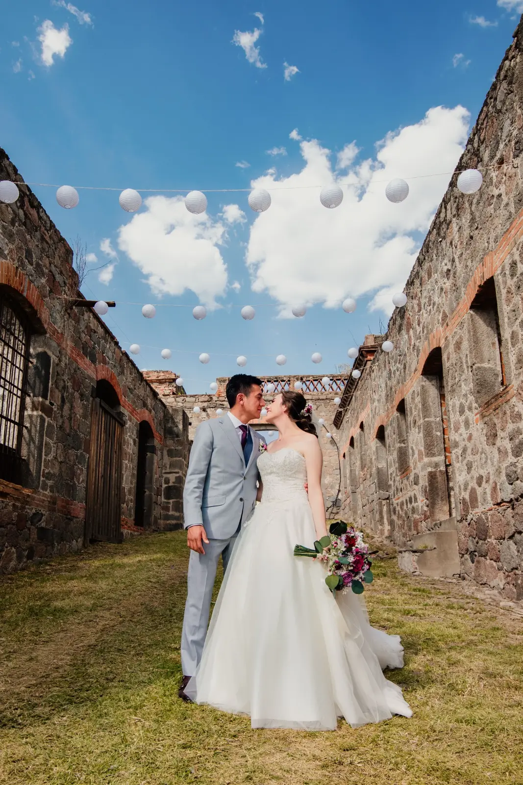
Fotografía en movimiento
Mira su historia.
El teaser se carga únicamente cuando decides reproducirlo, para conservar una página rápida y limpia.
Arquitectura histórica, un auto clásico y una noche inolvidable.
Una selección editorial de los momentos que construyeron la historia de Cecilia y Josué.
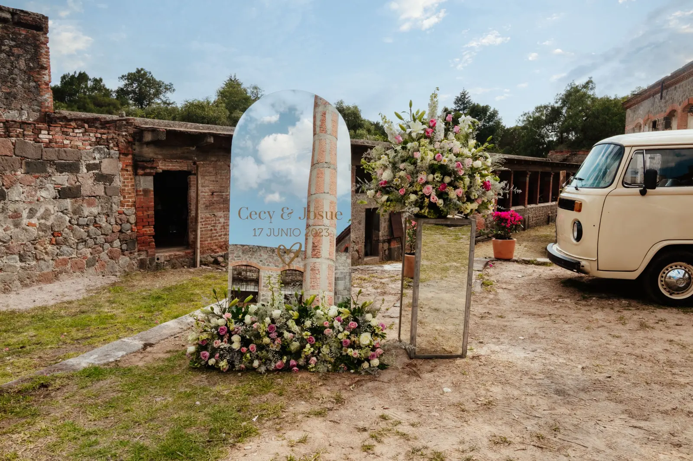
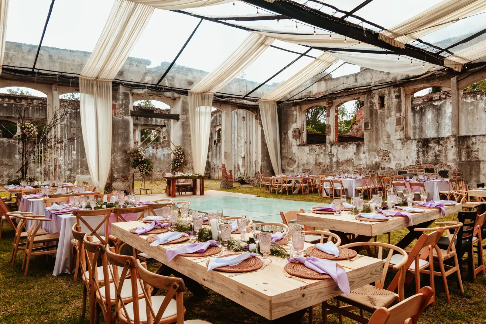
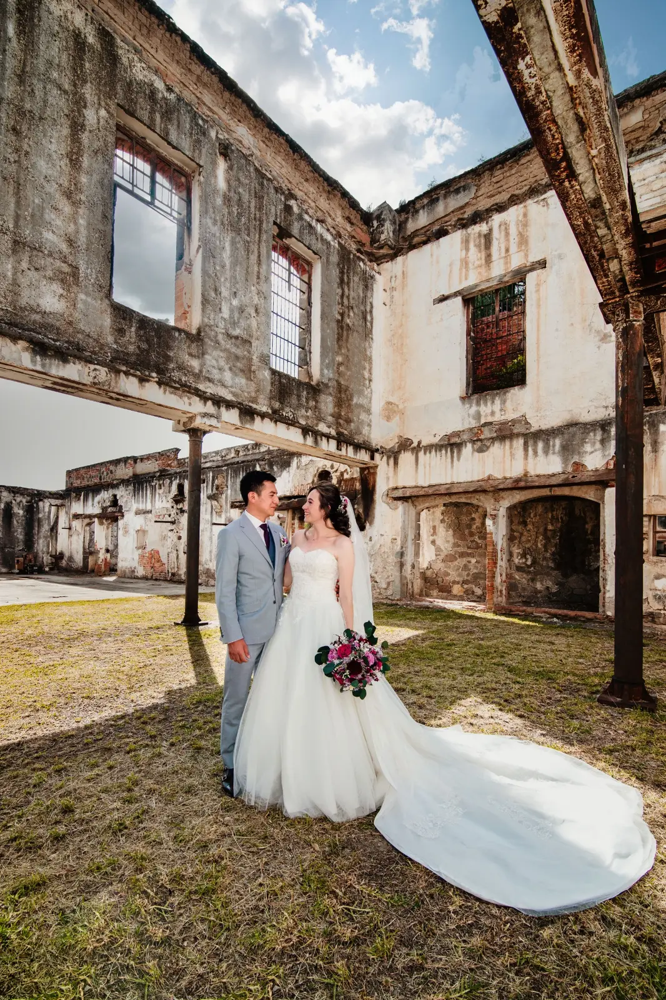
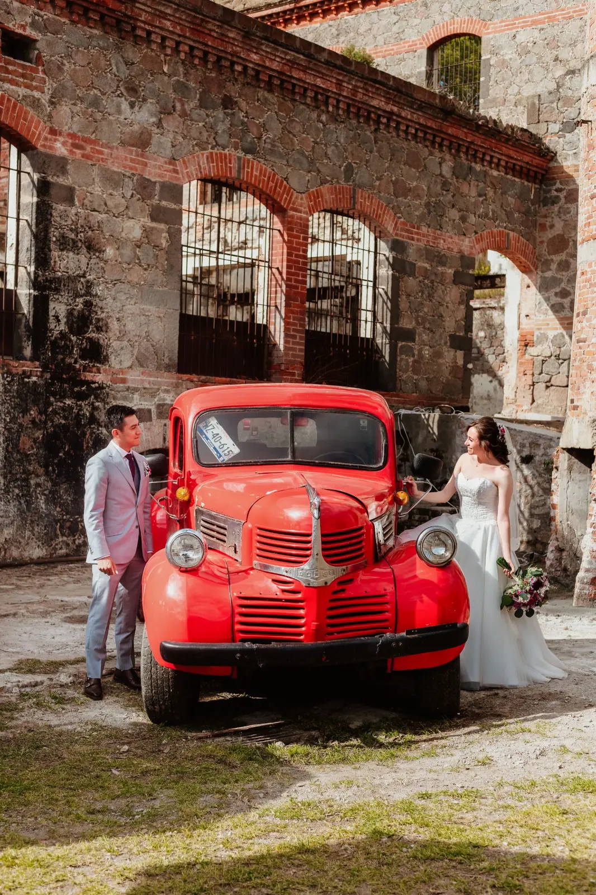
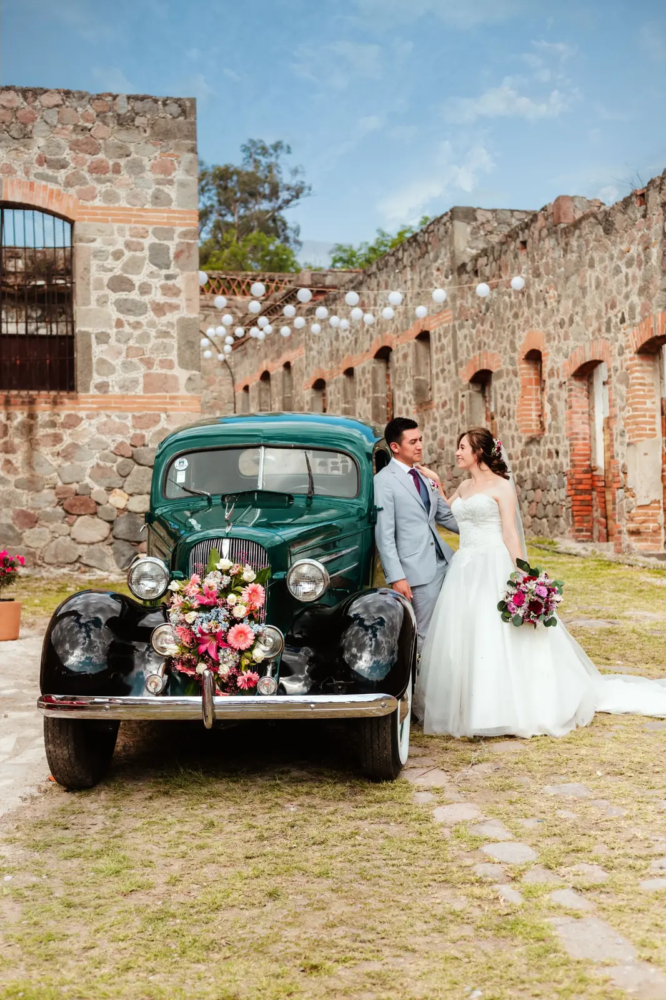
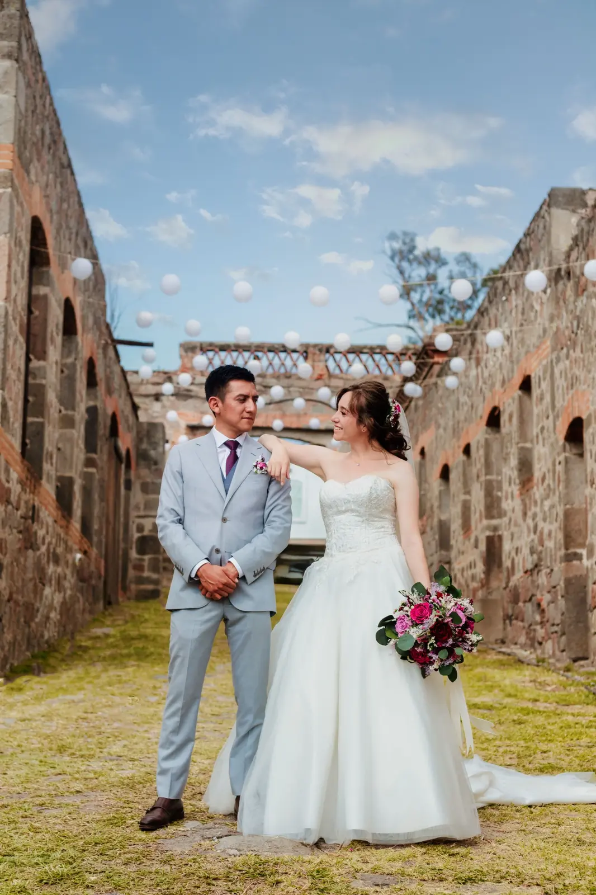
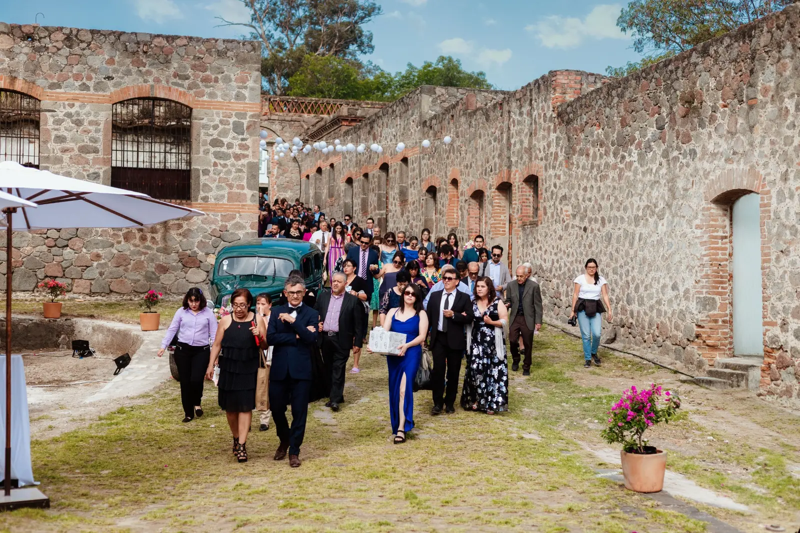
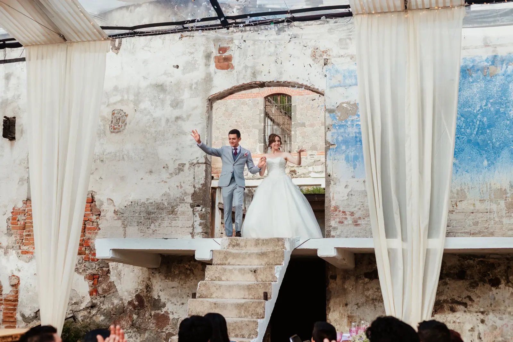
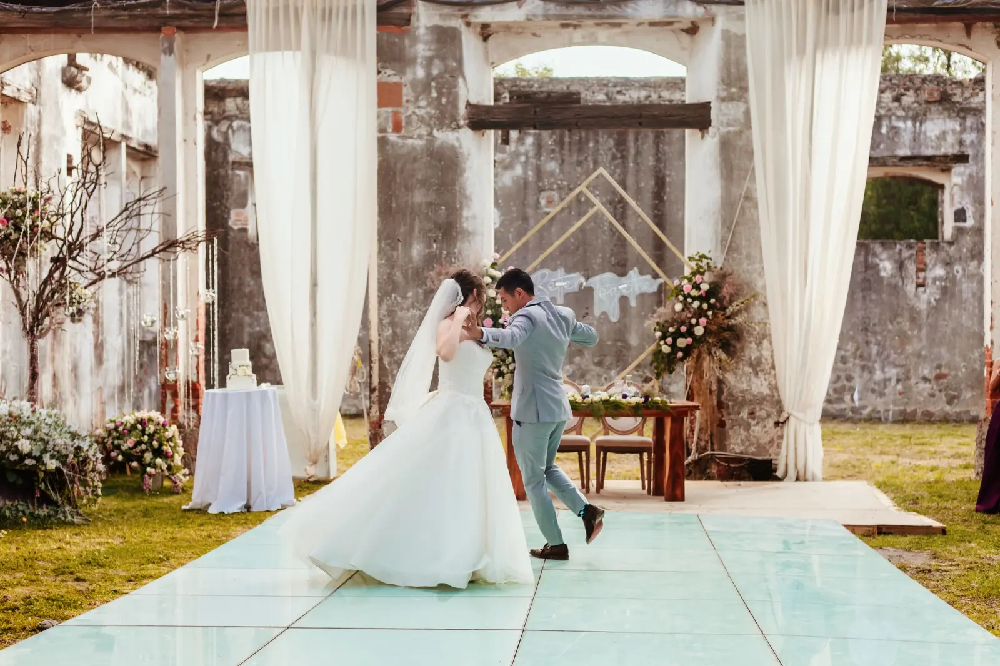
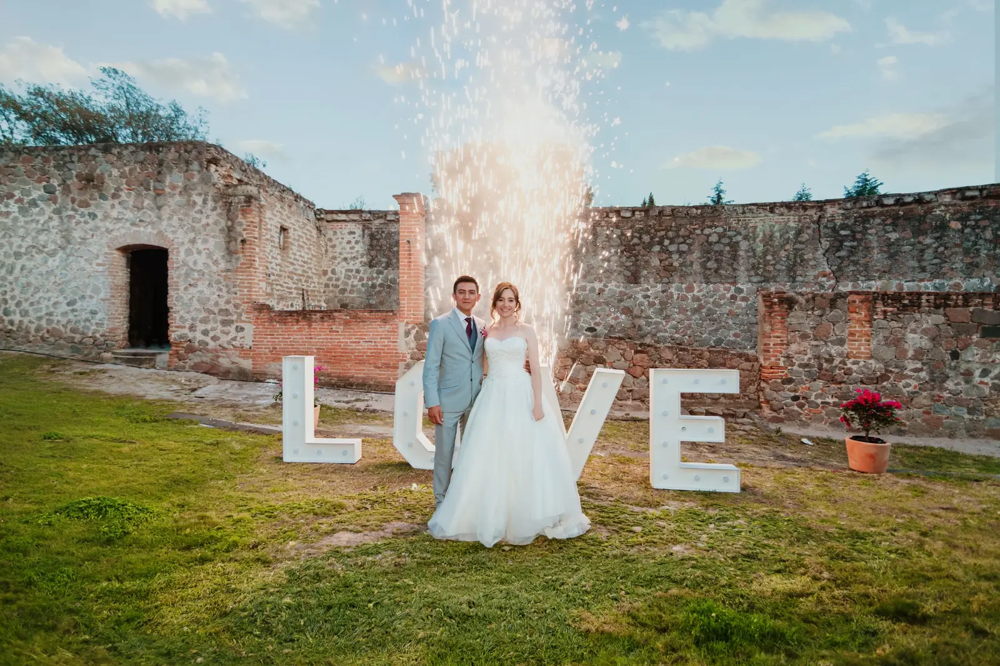
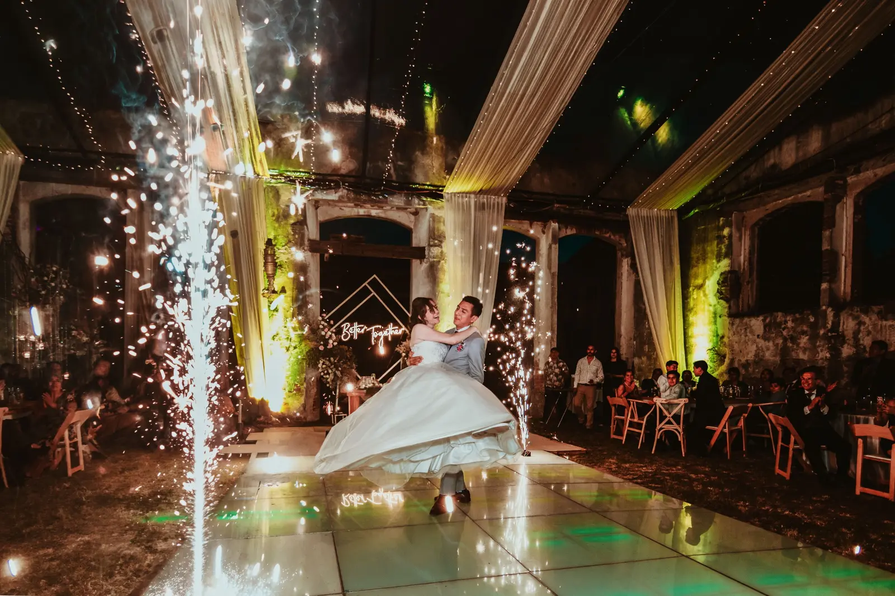
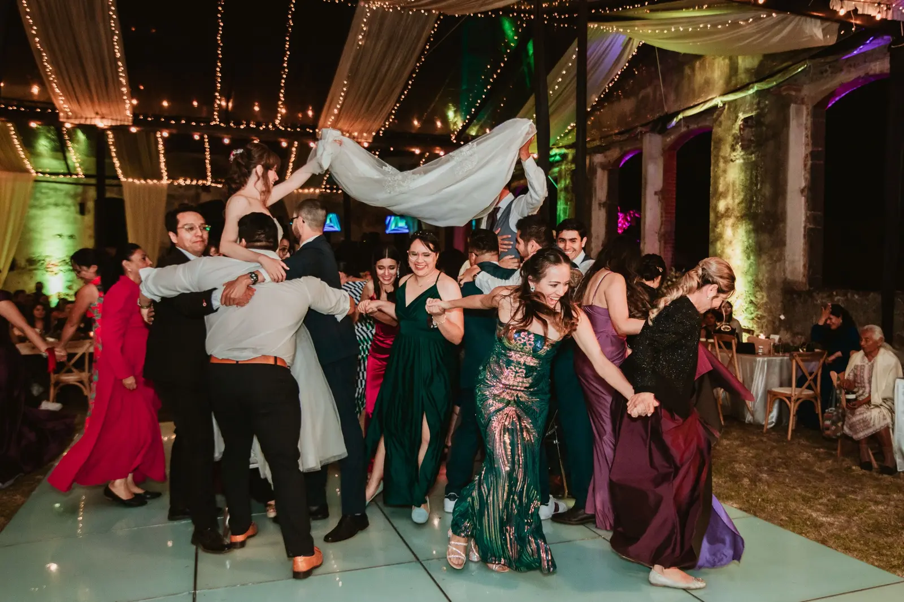
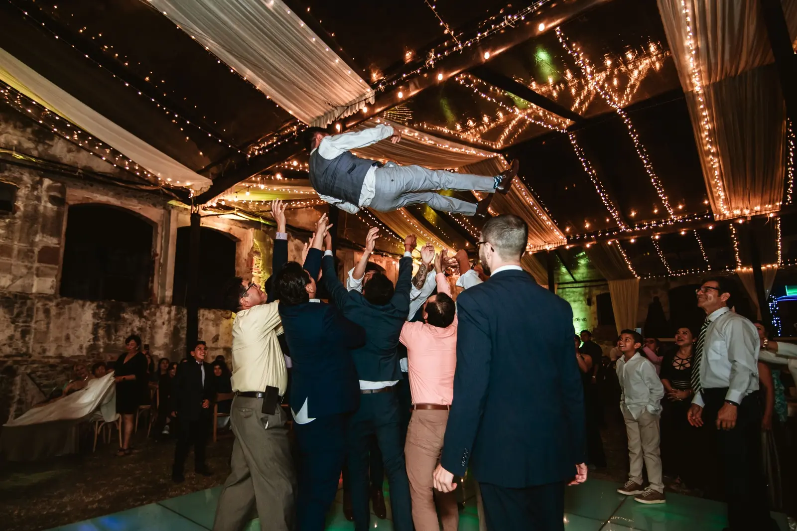
Tlaxcala
Una celebración contemporánea dentro de muros con historia.
La piedra, el ladrillo y los espacios abiertos de Ex Fábrica de Santa Elena crearon un contraste elegante con la decoración clara y los arreglos florales de la recepción.
Cecilia y Josué son una pareja profundamente emotiva. Se aman, disfrutan estar juntos y vivieron su boda al máximo: rodeados de muchos invitados, celebrando con amigos y familiares hasta el final de la noche.
Fotógrafo de bodas en Tlaxcala
Fotografía, video y dron para conservar cada perspectiva.
Documentamos bodas en Tlaxcala y Puebla con un equipo especializado en fotografía, video y tomas aéreas. Cada cobertura combina momentos espontáneos, retratos editoriales y la energía real de la celebración.
- ParejaCecilia y Josué
- Fecha17 de junio de 2023
- PreparaciónDomicilio en Apizaco
- CeremoniaParroquia de Apizaco
- RecepciónEx Fábrica de Santa Elena
- CoberturaFotografía, video y dron